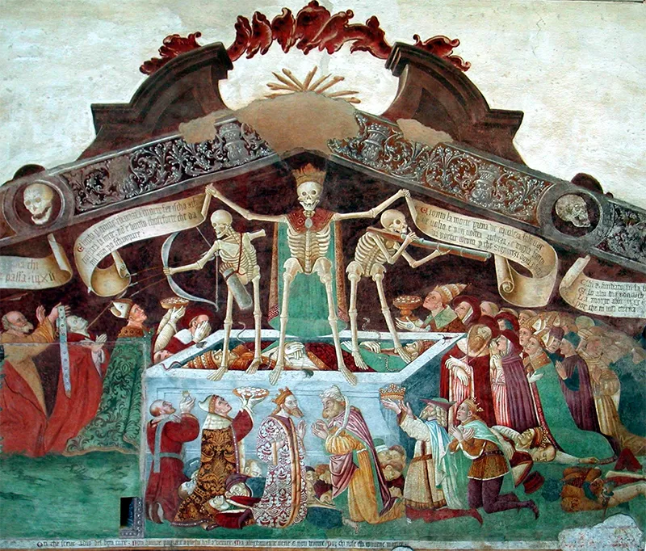
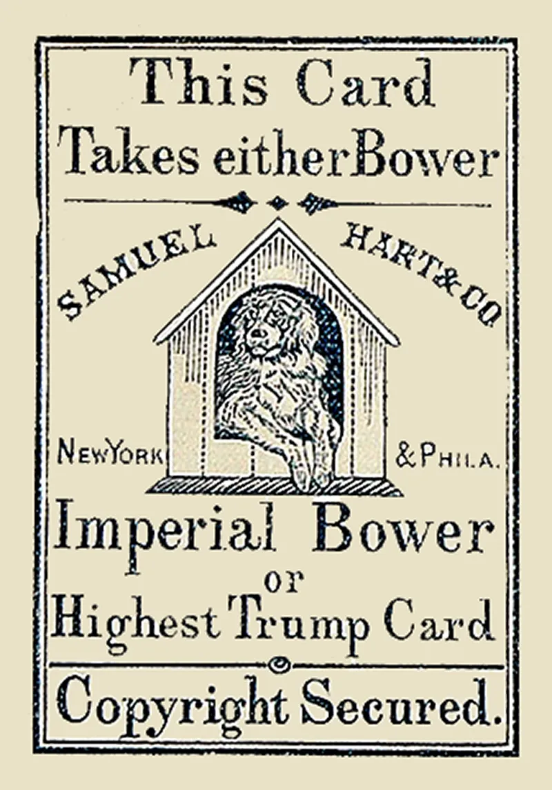
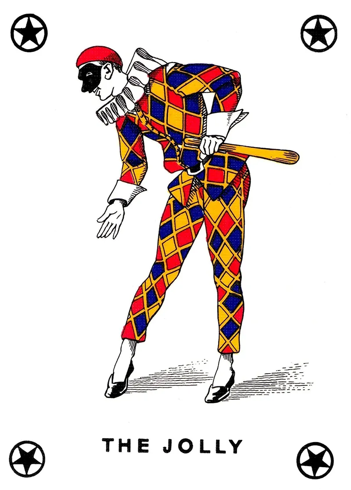
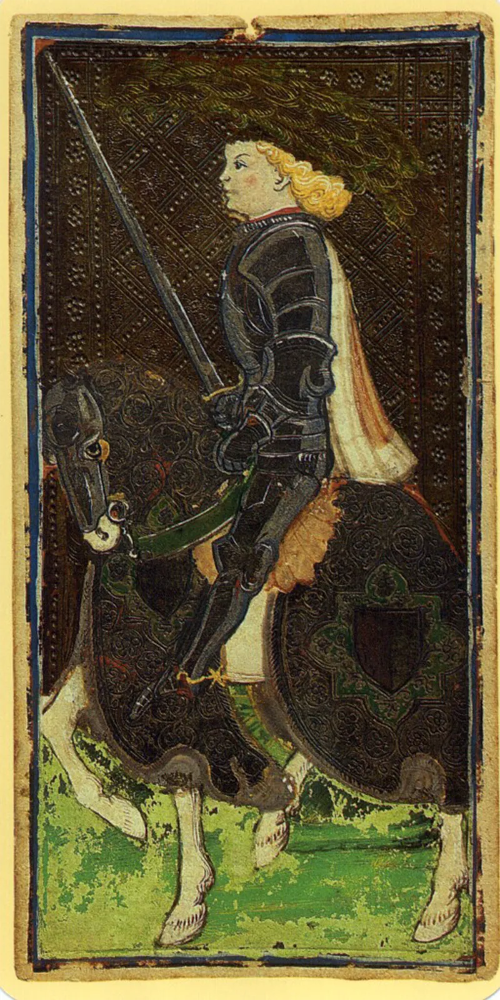

Sources:
British Museum playing card collections, historical studies on early European printing technologies, and Renaissance guild records of Italian cartegiari (card-makers).
Deck Architecture & Regional Variations

Figure 1: TO DO.
Before regional city-states began customizing their games, a foundational Renaissance architecture was established with 78 cards divided into two explicit mechanical classifications:
The Trionfi (Trumps):
22 cards featuring allegorical illustrations (Major Arcana). These acted as a permanent, standalone suit used exclusively to overpower standard cards during gameplay.
The Suited Cards:
56 cards divided into four traditional suits (Swords, Cups, Coins, and Batons). Each suit contained ten numerical "pip" cards (1 through 10) and four Court cards: the King, Queen, Knight (Cavalieri), and Page (Fanti).
Table 2.1: Architectural Variations of Tarocchi Decks
Contrary to popular belief, the modern Joker is not an evolved version
of the Tarot's Fool. The Joker was invented in the United States around
1860 specifically for the game of Euchre, where players needed a supreme
trump card (originally called the "Best Bower"). The card's modern name
actually derives from Jucker (or Juckerspiel), the German
game from which Euchre evolved. The thematic resemblance to the Tarot Fool
is purely a historical coincidence.

Figure 1: TO DO.

Figure 1: TO DO.
The Fate of the Knight
Standard decks never included a Knight. When Italian card-makers invented Tarocchi,
they expanded the standard three-card court (King, Queen, Jack/Page) into four.
Outside of Tarot and specific regional games, standard European decks maintain a
three-person court structure.

Figure 1: TO DO.
The Standardization of French Suits
The transformation of the suit symbols occurred in France during the
15th century. To enable rapid mass production, French manufacturers
replaced the intricate, hand-stenciled Italian symbols with simple,
dual-color, easily stenciled shapes: Swords became Spades (piques),
Cups became Hearts (cœurs), Coins became Diamonds (carreaux), and
Batons became Clubs (trèfles).
Figure 1: TO DO.
Production and Materiality: Luxury vs. The Street
The Aristocratic Luxury Decks:
Decks like the famous Milanese Visconti-Sforza were commissioned
by nobility as individual works of art. They were individually
hand-painted by court artists using egg tempera, fine inks, and
real gold leaf stampings on thick card stock. Because they were
too valuable to be shuffled roughly, they were preserved in pristine
condition.
The Popular Woodblock Decks:
For the lower classes, card-makers (cartegiari) utilized early
industrial woodblock printing. Outlines were stamped onto sheets of crude
paper using carved wooden blocks, and the color was quickly applied using
stencils. Because these everyday gaming decks were played with extensively
in taverns, they were worn to pieces, making surviving specimens incredibly
rare.
The Mechanical Evolution
The "Short-Circuit" Card
To fully appreciate why adding the 22 Trionfi (Major Arcana) to a standard
deck was so structurally revolutionary, it helps to look at a familiar piece
of modern pop culture: the game of Uno.
The Rule Interruption:
At first glance, Uno and Tarocchi
represent opposite poles of game design. Uno is a game of shedding, whereas
Tarocchi is a game of trick-taking. Yet, despite their inverted goals, they are
tied together by an identical mechanical breakthrough: the power to interrupt a
rigid game algorithm.
The Control Flow Break:
In modern web development and software architecture, programmers rely on a design
pattern called short-circuit evaluation or an early return. It is a conditional
command that tells a system: "Stop the normal progression. If this specific condition
is met, break the loop right now and change direction." Before the Renaissance, card
games followed a strict, linear algorithm:
Player A leads a suit, every subsequent player must follow that suit, and the highest
numerical card wins. The invention of the Trionfi functioned as history's first tabletop
control flow break. Playing a trump card instantly short-circuited the round, overriding
the standard suit rules and completely redirecting the flow of the game. The Major Arcana
were not born as mystical icons; they were the 15th-century ancestors of Uno's Skip,
Reverse, and Wild cards.
Historical Note
Banning the Gamble, Saving the Art:
Contrary to popular New Age myths, the medieval and Renaissance Catholic Church never officially
issued edicts banning or condemning Tarot cards as instruments of witchcraft or heresy. While early
puritanical street preachers routinely banned common dice games and standard pip card decks to curb
rowdy lower-class street gambling, Tarocchi decks escaped censorship. Because they were high-end luxury
items owned by ruling-class aristocrats, the deck enjoyed political protection from both state and
ecclesiastical courts.